DeepSeek-V4: Towards Highly Efficient Million-Token Context Intelligence
一句话概括：DeepSeek-V4 系列试图把“长上下文”和“test-time scaling”从昂贵演示变成可常态服务的能力。它的核心不是简单扩大窗口，而是用 CSA/HCA 混合注意力压缩 KV、用 mHC 稳定深层残差传播、用 Muon 和一整套训练/推理基础设施支撑 1M token 上下文。
这篇技术报告的叙事主线很清楚：当模型能力越来越依赖推理时长、工具轮数和多轮上下文时，瓶颈不再只是参数量，而是“每多想一步、每多保留一段历史，需要付出多少 attention 计算和 KV cache 成本”。DeepSeek-V4 的回答是把模型结构、优化器、训练课程、推理缓存和 agent sandbox 一起设计，而不是只发布一个更大的 MoE。
报告中的两个模型定位不同。DeepSeek-V4-Pro 是能力优先版本，总参数 1.6T、每 token 激活 49B；DeepSeek-V4-Flash 是效率优先版本，总参数 284B、每 token 激活 13B。两者都支持一百万 token 上下文，但 Pro 追求更强知识保留与复杂任务表现，Flash 则把“较小激活参数 + 更大 thinking budget”作为成本/能力折中。
| 读这篇论文时最该抓住的问题 | 报告中的答案 |
|---|---|
| 为什么百万 token 不是单纯调大 context window？ | 因为 vanilla attention 和 KV cache 会让服务成本随长度迅速变得不可接受，尤其在 test-time scaling 和 agent 场景下会反复触发长前缀 prefilling。 |
| DeepSeek-V4 的核心架构创新是什么？ | 混合 CSA/HCA attention 负责长上下文效率，mHC 负责残差传播稳定性，Muon 负责更快收敛和训练稳定。 |
| 为什么论文花很多篇幅讲系统？ | 因为 1M 上下文要真的可用，必须同时解决 MoE 通信、长上下文并行、异构 KV cache、on-disk 前缀复用、RL rollout 和 sandbox 并发。 |
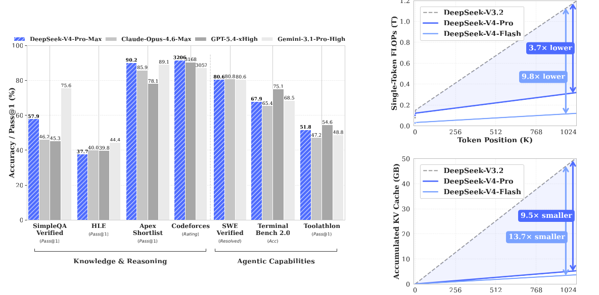
1. 引言与核心问题
1.1 问题定义：推理变长之后，attention 成本成为硬墙
论文开篇指出，推理模型把能力提升越来越多地交给 test-time scaling：更多思考 token、更长工具轨迹、更长 agent 任务。但 vanilla attention 的二次复杂度会在超长上下文下成为主瓶颈，KV cache 也会随长度线性膨胀，导致 1M token 更像“能跑一次”而不是“能长期服务”。
DeepSeek-V4 的目标因此有两层：第一，降低长上下文推理的算力和显存成本；第二，让模型在长上下文下仍然能做推理、工具调用、搜索、写作和代码 agent，而不是牺牲能力换窗口。
1.2 难点拆解：长上下文、MoE、agent 会互相放大成本
长上下文的难点不是单一模块慢，而是多种成本叠加。attention 需要在长序列中找信息，MoE 需要跨设备 dispatch/combine，agent 需要把工具调用、工具结果和中间状态留在上下文中，post-training 又需要对这些长轨迹做 RL 或 OPD。只优化某一个点，往往会把瓶颈推到另一个位置。
因此，DeepSeek-V4 的设计可以看成一个“成本闭环”：CSA/HCA 减少 attention 与 KV cache；EP pipeline 减少 MoE 通信可见延迟；on-disk KV cache 复用共享前缀；interleaved thinking 让工具任务不重复丢失问题状态；million-token RL 框架让这些能力能在后训练阶段被真正优化。
| 挑战 | DeepSeek-V4 的对应设计 | 直观作用 |
|---|---|---|
| 长上下文 attention 计算昂贵 | CSA + HCA 混合注意力 | 先压缩 KV，再稀疏选择或重压缩，以降低长序列计算量。 |
| KV cache 过大，服务成本高 | 混合精度 KV、异构 KV layout、on-disk KV cache | 减少 GPU cache，并复用共享前缀，降低 prefilling 重复开销。 |
| 大规模 MoE 训练不稳定 | mHC、Muon、Anticipatory Routing、SwiGLU Clamping | 同时处理残差传播、优化器收敛和 MoE outlier/spike。 |
| Agent 任务轨迹长、工具轮多 | Interleaved Thinking、DSML 工具调用格式、百万 token RL/OPD 基建 | 在工具场景保留跨轮 reasoning 状态，减少重复重建问题状态。 |
2. 架构创新
DeepSeek-V4 的原文架构章节并不是把 Transformer 全部推倒重来，而是在既有 MoE Transformer 上做三处关键替换：用 mHC 改造跨层残差传播，用 CSA/HCA 改造长上下文注意力，用 Muon 改造大部分权重矩阵的优化过程。这样做的共同目标是让模型在百万 token、MoE 大容量和长轨迹 agent 三个压力下仍能训练和服务。
从 Figure 2 看，V4 仍保留 DeepSeekMoE、MTP、RMSNorm、MoE FFN 等熟悉部件；真正改变计算形态的是 attention 和 residual stream。CSA/HCA 让每层不再保存和访问完整 KV 序列，mHC 让跨层信息流有更宽的状态空间，Muon 则把优化器从 element-wise 更新推进到 matrix-wise 更新。三者分别对应“长上下文效率”“深层信号传播”“大规模训练稳定性”。
| 模块 | 继承或新增 | 为什么重要 |
|---|---|---|
| DeepSeekMoE | 继承 DeepSeek-V3 系列范式，并调整 routing affinity 为 Sqrt(Softplus) | 继续使用细粒度 routed experts 与 shared expert，以较低激活参数获得大容量知识。 |
| MTP | 沿用 DeepSeek-V3 配置 | 作为辅助预测目标，提升训练效率和 token-level 表征质量。 |
| mHC | 新增 | 扩展残差流宽度，同时用流形约束抑制深层传播不稳定。 |
| CSA/HCA | 新增 | 分别处理“可检索的细粒度长程记忆”和“极低成本粗粒度全局记忆”。 |
| Muon | 新增到大部分参数 | 通过近似正交化更新矩阵提升收敛和稳定性，并配合 RMSNorm attention 避免 QK-Clip。 |
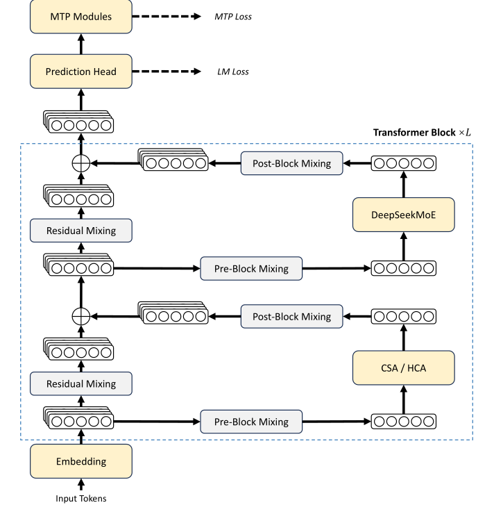
一个容易忽略的点是，V4 的“架构创新”并不只服务于 benchmark 分数。CSA/HCA 会改变 KV cache 的形态，后面必须配合异构 KV layout 和 on-disk KV cache；mHC 会增加 activation 和 pipeline 通信，后面必须配合 fused kernel 与 selective recomputation；Muon 需要完整梯度矩阵，后面必须配合 hybrid ZeRO bucket assignment。也就是说，第 2 节的模型结构和第 3 节的基础设施是一组共同设计。
2.1 Manifold-Constrained Hyper-Connections (mHC)：流形约束超连接
2.1.1 从 residual stream 到 hyper residual stream
Hyper-Connections 的思想是把残差流从 $R^d$ 扩展到 $R^{n_{hc}\times d}$，让层输入仍是 $d$ 维，但残差状态有更多通道可以混合。标准形式为：
这里 $A_l$ 从扩展残差中混合出当前层输入，$F_l$ 是 attention 或 MoE 层，$C_l$ 把层输出写回扩展残差，$B_l$ 则负责残差状态自身的传播。论文观察到普通 HC 在深层堆叠时容易数值不稳定，于是把 $B_l$ 约束到双随机矩阵流形：
2.1.2 双随机约束如何稳定训练
双随机约束让 $B_l$ 的谱范数不超过 1，直观上就是残差传播不再无限放大。更关键的是，双随机矩阵集合在矩阵乘法下闭合，因此多层 mHC 叠起来时仍然保持非扩张性质；这对 60 层以上 MoE 模型尤其重要，因为普通残差路径中的微小放大可能在深层堆叠和反向传播中不断积累。
实现上，论文对原始 $\tilde{B_l}$ 取指数以保证正值，再用 Sinkhorn-Knopp 做列/行归一化；Pro/Flash 都设 $n_{hc}=4$，迭代次数 $t_{max}=20$。$A_l$ 与 $C_l$ 也不是任意矩阵：$A_l=\sigma(\tilde A_l)$ 保证非负有界，$C_l=2\sigma(\tilde C_l)$ 控制写回幅度。这是一种很工程化的稳定性处理：保留 HC 的表达能力，同时给信号传播加硬约束。
| mHC 映射 | 在公式中的角色 | 约束方式 | 直观解释 |
|---|---|---|---|
| $A_l$ | 从 $n_{hc}$ 条 residual stream 混合出当前层输入 | Sigmoid 保证非负有界 | 决定这一层“读”哪些残差通道。 |
| $B_l$ | 让扩展残差状态在层间继续传播 | 投影到双随机矩阵流形 | 保留跨层混合，但限制传播增益。 |
| $C_l$ | 把当前层输出写回扩展残差状态 | $2\sigma(\tilde C_l)$ 控制写回幅度 | 决定这一层“写”回哪些残差通道。 |
2.1.3 动态参数化与工程代价
mHC 的三个映射不是固定参数直接使用，而是由输入相关的动态分量和输入无关的静态分量共同生成。论文先把当前 residual state 展平并 RMSNorm，再产生 $\tilde A_l,\tilde B_l,\tilde C_l$。这样做的好处是连接模式可以随 token/state 改变；代价是多了小矩阵计算、额外 activation 和 pipeline 通信。论文后文通过 fused mHC kernel、选择性 recomputation 和 DualPipe 调整，把 mHC wall-time overhead 控制在一个可接受范围内。
2.1.4 它为什么不是简单“加宽 hidden size”
mHC 提供的是另一条 scaling axis。传统扩模型通常加 hidden size、加层数、加 experts；这些方式会直接增加每个层内部矩阵乘法成本。mHC 则把“层间携带的状态”扩成 $n_{hc}$ 条，但每个 attention/MoE 层看到的输入仍是 $d$ 维。因此它更像给跨层信息流增加带宽，而不是把每个层的计算宽度直接放大。论文中 Pro 与 Flash 都取 $n_{hc}=4$，说明 DeepSeek 更看重这条残差宽度带来的稳定收益，而不是无限扩大它。
2.2 Compressed Sparse Attention (CSA)：压缩稀疏注意力
2.2.1 压缩后再稀疏检索
CSA 先把每 $m$ 个 token 的 KV 压缩为一个 compressed KV entry，再用 lightning indexer 对压缩后的 KV 做 top-k 选择，最后执行 MQA。Pro 中 $m=4$、top-k=1024；Flash 中 $m=4$、top-k=512。其关键压缩形式可以理解为：先为相邻窗口产生 KV 值与权重，再以 softmax 权重做逐维加权求和。
这个式子里，$C^a,C^b$ 是两组 KV 值，$S^a,S^b$ 是对应 compression weights。第二个求和项来自前一段 token，因此 CSA 的压缩窗口存在重叠：每个 compressed entry 不只是当前 $m$ 个 token 的摘要，也吸收了相邻边界信息。压缩完成后，lightning indexer 先用更低维的 indexer query/key 估计相关性，再由 top-k 选择少量 compressed blocks 进入核心 attention。
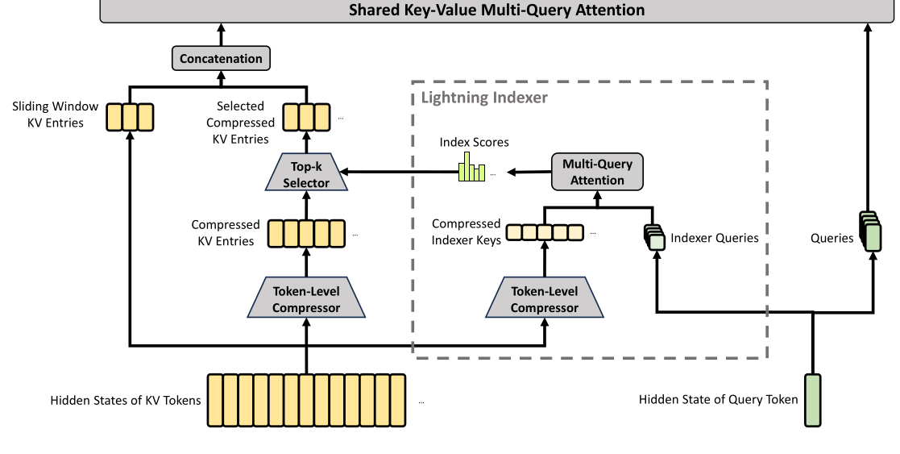
2.2.2 Lightning Indexer：先用便宜路径找候选块
CSA 的稀疏不是直接在完整 token 上做，而是在压缩块上做。每个 query 先生成一个低秩的 indexer query，同时历史压缩块生成 compressed indexer keys；indexer 计算相关性分数后，top-k selector 只保留得分最高的压缩 KV entries 进入核心 attention。这个设计把昂贵的长程匹配拆成两段：便宜的检索路径负责“找哪里值得看”，较贵的 MQA 路径只对候选块做精细读写。
| CSA 阶段 | 输入/输出 | 节省来自哪里 |
|---|---|---|
| Token-Level Compressor | 每 $m=4$ 个 token 生成一个 compressed KV entry，并带有跨块重叠 | 序列长度先缩短到约 $1/m$。 |
| Lightning Indexer | 用低维 indexer query/key 计算压缩块分数 | 检索路径比完整 attention 更便宜。 |
| Top-k Selector | Pro 选 1024 个压缩块，Flash 选 512 个压缩块 | 核心 attention 不再随完整上下文线性增长。 |
| Shared KV MQA | selected compressed KV entries 同时作为 key 和 value | 共享 KV 减少每头 KV 存储和读取成本。 |
| Grouped Output Projection | 把多头输出先分组降维再汇总 | 避免 $c n_h$ 直接投到 $d$ 的高成本输出投影。 |
2.2.3 CSA 保留了什么信息，牺牲了什么信息
CSA 的优势是保留了内容相关的长程检索能力：如果某段历史被 indexer 判为相关，它仍可进入核心 attention。代价也很清楚：第一，$m=4$ 压缩意味着 token 级细节已经被汇总；第二，top-k 意味着没有入选的历史块不会被读到；第三，indexer 本身需要学习如何在超长上下文里排序候选块。因此论文才给 CSA 额外加了滑窗分支和 attention sink，前者补近邻精度，后者避免 attention head 被迫把概率分给无关历史。
2.3 Heavily Compressed Attention (HCA)：重压缩注意力
2.3.1 更强压缩但不做 top-k
HCA 则更激进：每 $m'$ 个 token 压缩成一个 KV entry，论文中 $m'=128$，但不做 sparse top-k，仍对重压缩后的 KV 做 dense MQA。它适合承担“极长距离、低分辨率”的全局记忆。
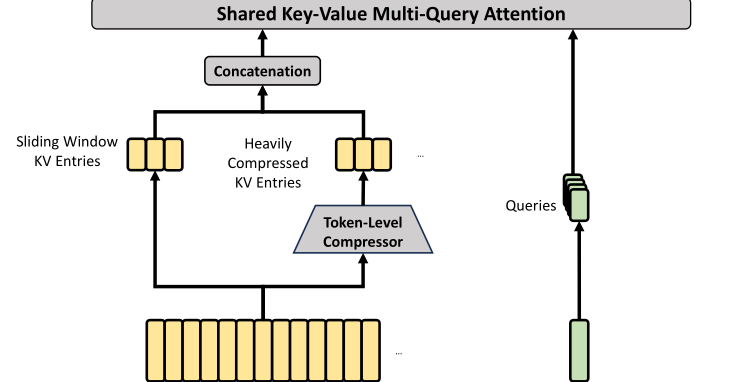
2.3.2 HCA 和 CSA 如何互补
HCA 不负责细粒度召回，它负责让模型始终拥有一条廉价的全局背景通道。CSA 像“可检索索引”，能按 query 找到少量相关块；HCA 像“粗摘要时间线”，把很长历史以 $1/128$ 的粒度保留下来。论文采用 interleaved hybrid configuration，Flash 前两层使用纯 sliding window attention，后续层 CSA/HCA 交错；Pro 前两层使用 HCA，后续层 CSA/HCA 交错。这样的层间混合让模型既有早期局部/粗全局归纳，也有后续的内容检索能力。
| 注意力类型 | 压缩率 | 是否 top-k | 最适合承担的记忆 |
|---|---|---|---|
| Sliding Window Attention | 不压缩，窗口 $n_{win}=128$ | 否 | 最近 token 的高分辨率局部依赖。 |
| CSA | $m=4$ | 是，Pro 1024 / Flash 512 | 中远程内容相关块的精细检索。 |
| HCA | $m'=128$ | 否 | 超长程、低分辨率全局背景。 |
2.3.3 CSA/HCA 共享技巧：局部滑窗、相对位置与 attention sink
| 技巧 | 作用 | 为什么和长上下文有关 |
|---|---|---|
| Query/KV RMSNorm | 在核心 attention 前归一化 query 和 compressed KV entry | 降低 attention logits 爆炸风险，也让 Muon 不需要额外 QK-Clip。 |
| Partial RoPE | 只在 query、KV entry、attention output 的最后 64 维应用 RoPE | 因为 KV entry 同时作为 key 和 value，输出需要乘以 query 位置的反向 RoPE，把 value 的绝对位置相位转成相对位置相位。 |
| Sliding Window branch | 每个 query 额外访问最近 $n_{win}=128$ 个未压缩 KV | 压缩 block 内的 token 不能被当前 query 细粒度访问，滑窗补回近邻依赖。 |
| Attention sink | 在 softmax 分母中加入可学习 sink logit | 允许某个 head 不必把注意力总量全部分配给历史 token，减少无意义长程关注。 |
因此，CSA/HCA 并不是“丢掉大部分上下文”，而是把上下文分成不同分辨率：最近 token 保持未压缩，中远程信息由 CSA 进行内容检索，超长程背景由 HCA 粗粒度保留。这个分层视角比单一 sparse attention 更能解释论文中 1M token 仍可服务的原因，也解释了为什么长上下文结果会在 512K/1M 处退化：信息被压缩和筛选后仍可用，但不可能完全等价于 full attention。
2.3.4 Pro 与 Flash 的注意力配置差异
| 配置项 | DeepSeek-V4-Flash | DeepSeek-V4-Pro |
|---|---|---|
| 前两层 attention | Pure sliding window attention | HCA |
| 后续层 | CSA/HCA interleaved | CSA/HCA interleaved |
| CSA 压缩率 / top-k | $m=4$ / 512 | $m=4$ / 1024 |
| HCA 压缩率 | $m'=128$ | $m'=128$ |
| query heads / head dim | 64 / 512 | 128 / 512 |
| query compression dim | 1024 | 1536 |
| output projection groups | 8 | 16 |
这张配置表也能说明 Pro 与 Flash 的定位。Flash 更像高效版：更少 query heads、更低 top-k、更小 query compression dim，牺牲一部分容量换吞吐；Pro 则在保持同样压缩率的前提下扩大头数、top-k 和投影分组，给长程检索和表达容量更多预算。
2.4 Muon Optimizer：大部分参数不用 AdamW
2.4.1 更新矩阵近似正交化
论文把 AdamW 保留给 embedding、prediction head、mHC 的静态 bias/gate 和 RMSNorm 权重，其他大部分参数用 Muon。Muon 的关键是对动量更新矩阵做近似正交化，论文采用 10 步 hybrid Newton-Schulz：前 8 步快速把奇异值推近 1，后 2 步稳定到 1。
这里 $G_t$ 是当前梯度，$M_t$ 是 momentum buffer，$O'_t$ 是经过 Newton-Schulz 正交化后的更新方向，$O_t$ 再按 RMS 做 rescale 以复用 AdamW 的学习率尺度。直观上，Muon 不只是沿梯度方向走一步，而是先把矩阵更新方向的谱结构整理得更“均衡”，从而改善深层大矩阵训练中的条件数和收敛行为。
| Newton-Schulz 阶段 | 迭代步数 | 系数 $(a,b,c)$ | 作用 |
|---|---|---|---|
| 快速收敛阶段 | 8 | $(3.4445,-4.7750,2.0315)$ | 快速把奇异值推近 1。 |
| 稳定阶段 | 2 | $(2,-1.5,0.5)$ | 把奇异值稳定在 1 附近。 |
2.4.2 哪些参数仍用 AdamW
| 优化器 | 覆盖参数 | 论文中的考虑 |
|---|---|---|
| AdamW | Embedding、prediction head、RMSNorm 权重、mHC 静态 bias 和 gating factors | 这些参数更像尺度/接口参数，使用成熟稳定的 element-wise optimizer 风险更低。 |
| Muon | 其余大部分 dense 与 MoE 矩阵参数 | 核心权重矩阵适合矩阵级更新；Muon 的近似正交化有助于更快收敛和稳定训练。 |
值得注意的是，V4 的 attention query/KV RMSNorm 已经能抑制 attention logits 爆炸，因此论文没有使用 QK-Clip。这说明架构与优化器不是独立拼装，而是在稳定性上互相配合。预训练设置里还给出具体超参：Muon momentum 为 0.95，weight decay 为 0.1，并把每个更新矩阵的 RMS rescale 到 0.18，以复用 AdamW 的学习率尺度。
2.4.3 Muon 的分布式实现
Muon 要拿到完整梯度矩阵才能做矩阵级更新，这和 ZeRO 这类按元素切分优化器状态的方法天然冲突。论文对 dense 参数限制 ZeRO 并行规模，用 knapsack 分配矩阵；对 MoE 参数则按 expert 独立优化，把相同形状参数合并后批量执行 Newton-Schulz。MoE 梯度同步时还会随机舍入到 BF16 以降低通信量，再用 all-to-all 加本地 FP32 求和避免低精度累积误差。
从工程角度看，Muon 的难点不是公式本身，而是如何在上万张卡上既拿到完整矩阵，又不让优化器状态和通信吞掉收益。DeepSeek 的做法是混合策略：dense 矩阵用有限 ZeRO 并行和负载均衡 bucket，MoE expert 矩阵按 expert 独立处理，相同形状矩阵合并成 batch 来跑 Newton-Schulz。这样 Muon 才能从论文算法变成可用于 1.6T MoE 训练的系统组件。
3. 基础设施
原文第 3 节标题是 General Infrastructures，它不是附录式工程细节，而是 DeepSeek-V4 能否训练、推理和上线的关键。架构越复杂，越不能指望通用框架自动把效率吃满；因此论文围绕 MoE 通信、kernel 开发、确定性计算、长上下文并行和 activation checkpointing 做了一整套基础设施。
3.1 Fine-Grained Communication-Computation Overlap in Expert Parallelism
MoE 的 Expert Parallelism 被拆成 Dispatch、Linear-1、Activation、Linear-2、Combine，并通过 expert wave 把通信和计算细粒度重叠。论文的关键观察是：单个 MoE layer 里通信总耗时小于计算总耗时，因此如果调度足够细，通信可以被 GEMM 计算隐藏。
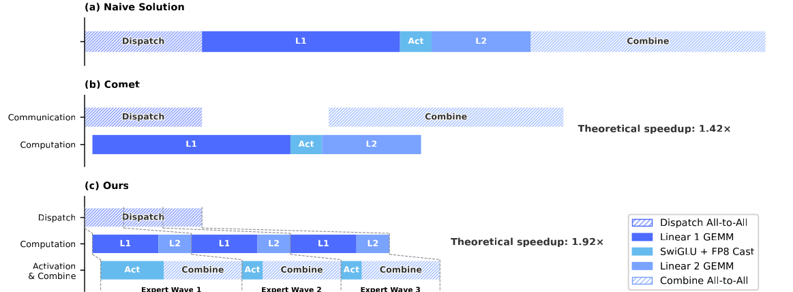
论文给出的直觉很工程：如果单个 MoE layer 中通信总时间小于计算总时间，那么只要 pipeline 足够细，通信就可以被计算覆盖。本文方案把 experts 切成 wave，当前 wave 做 GEMM 时，下一 wave 可以 dispatch，上一 wave 可以 combine。这样降低了对互联带宽的硬依赖，也尤其适合 RL rollout 和 agent serving 中常见的小 batch、长尾请求。
3.2 Flexible and Efficient Kernel Development with TileLang
V4 的结构如果直接落到 PyTorch ATen，会产生大量细粒度算子和 Python-side 调度开销。论文采用 TileLang 写 fused kernels，并通过 Host Codegen 把运行时检查与 launcher 逻辑下沉到生成的 host code，使小 kernel 调用开销从几十/几百微秒降到接近 1 微秒量级。TileLang 还引入 Z3 SMT solver 辅助整数分析，用于更可靠地处理复杂 tensor index、layout inference、hazard detection 和 bounds analysis。
3.3 Batch-Invariant and Deterministic Kernel Libraries
训练和推理都强调 bitwise reproducibility：attention、matrix multiplication、MoE backward、mHC 小矩阵计算都要避免非确定性 accumulation order。这样做不只是为了“结果一致”，更是为了定位 loss spike、kernel bug 和 post-training 行为漂移。论文为 sparse attention backward、MoE backward、small-batch matmul 等路径分别设计了确定性 accumulation 或 reduction 方案。
4. KV Cache 与磁盘缓存
4.1 Heterogeneous KV Cache Layout
推理侧最直接面对 KV cache。CSA/HCA、SWA 和 indexer 的 KV 尺寸、生命周期、压缩规则都不同，传统 PagedAttention 假设被打破。DeepSeek-V4 因此把 cache 分成 state cache 与 classical KV cache，并允许不同层有不同 block 策略。
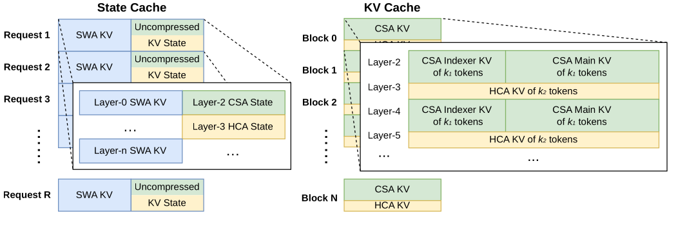
这个 layout 的关键是把“序列状态”和“经典 KV block”分开。SWA 最近窗口、CSA/HCA 未完成压缩的尾 token 更像 sequence-specific state，适合放在固定大小 state cache；已经完成压缩的 CSA/HCA KV entries 则可以按 block 管理。每个 block 覆盖 $\mathrm{lcm}(m,m')$ 个原始 token，这样 CSA 和 HCA 的压缩边界可以对齐。
4.2 On-Disk KV Cache Storage
on-disk KV cache 用于共享前缀复用。对于 CSA/HCA，压缩 KV entries 可以直接写盘并在 prefix hit 时读取；对于 SWA，由于未压缩且体积大，论文给出 Full SWA Caching、Periodic Checkpointing、Zero SWA Caching 三种策略，在存储写入、读取量和尾部 recomputation 之间权衡。这部分说明 V4 的“百万 token”不是只靠 GPU 显存硬扛，而是利用压缩状态和前缀缓存把服务成本摊薄。
| 策略 | 写盘内容 | 适合场景 |
|---|---|---|
| Full SWA Caching | 保存完整 SWA KV，命中前缀后几乎不用重算 | 计算极贵、存储写入和容量压力可接受的场景。 |
| Periodic Checkpointing | 每隔 $p$ 个 token 保存最近 $n_{win}$ 个 SWA KV | 在存储和 recomputation 之间做可调折中。 |
| Zero SWA Caching | 不保存 SWA KV，只保存 CSA/HCA 压缩 KV | 存储敏感或共享前缀很多、可接受尾部重算的场景。 |
5. 预训练设置
5.1 Data Construction：数据构造与长上下文课程
预训练数据超过 32T token，强调数学、代码、网页、长文档、多语言和学术资料。Flash 训练 32T token，Pro 训练 33T token；两者都从 4K 序列起步，逐步扩展到 16K、64K、1M。稀疏 attention 不是一开始就上：先用 dense attention warmup，再在 64K 阶段引入 CSA indexer 与 sparse attention。
数据侧的重点不是“更多网页”，而是更高比例的高价值长文档和可支持长程推理的样本。论文特别提到科学论文、技术报告、代码与 agentic data；多语言数据也被扩大，用来覆盖不同文化和长尾知识。训练时还继承 DeepSeek-V3 的 token-splitting 和 Fill-in-Middle，并使用 sample-level attention masking，避免 pack 到同一序列中的不同样本互相泄漏。
| 训练阶段 | 上下文长度 / attention 策略 | 目的 |
|---|---|---|
| 早期 warmup | 4K 起步，使用 dense attention | 先学习基础语言、知识和 MoE routing，降低早期稀疏 attention 对稳定性的扰动。 |
| 中期扩展 | 逐步到 16K、64K | 让模型逐步适应更长依赖，开始 warm up CSA lightning indexer。 |
| 后期长上下文 | 扩展到 1M，并保持 sparse attention | 训练模型在压缩 KV 和稀疏检索机制下处理百万级上下文。 |
5.2 Model Setups：Pro 与 Flash 的配置差异
| 配置 | DeepSeek-V4-Flash | DeepSeek-V4-Pro |
|---|---|---|
| 层数 / hidden dim | 43 / 4096 | 61 / 7168 |
| 总参数 / 激活参数 | 284B / 13B | 1.6T / 49B |
| CSA | $m=4$, top-k=512 | $m=4$, top-k=1024 |
| HCA | $m'=128$，与 CSA 交错使用 | |
| MoE | 1 shared + 256 routed experts，每 token 激活 6 个 | 1 shared + 384 routed experts，每 token 激活 6 个 |
| mHC | $n_{hc}=4$，Sinkhorn-Knopp 20 次 | |
这张表也解释了为什么 Flash 在 reasoning 上可以靠更长思考接近 Pro，但在知识类任务上通常落后：Flash 的激活参数只有 13B，总容量和每 token 可用表示空间都更小；Pro 则用 61 层、7168 hidden dim、384 routed experts 和更高 CSA top-k 换取更强的知识记忆与复杂任务建模。
5.3 Training Setups and Instability：训练课程与稳定性
训练稳定性方面，论文很坦诚：trillion-parameter MoE 仍有 loss spike。两个实用技巧是 Anticipatory Routing 和 SwiGLU Clamping。前者用历史参数提前算 routing indices，把 backbone 与 router 的同步更新解耦；后者把 SwiGLU linear 分量 clamp 到 $[-10,10]$，gate 分量上限设为 10，以抑制 outlier。
Anticipatory Routing 的核心不是简单延迟更新，而是把 step $t$ 的 routing indices 在 step $t-\Delta t$ 预先计算并缓存。这样，当前 backbone 参数用于特征计算，而 routing 决策来自历史网络，减少 router 与 backbone 同步互相放大异常值的机会。论文还做了动态触发：检测到 loss spike 时短暂 rollback 并启用 Anticipatory Routing，稳定后再恢复标准训练，因此总体额外训练开销很小。
SwiGLU Clamping 则更直接：限制 SwiGLU 的 linear 分量和 gate 分量上界，防止 MoE 层中少数异常激活变成后续层的 outlier 源。论文承认这两个技巧的理论机制尚未完全理解，这是后面“局限性”里非常关键的一点。
6. 后训练流水线
Post-Training 部分是论文能力合成的核心。DeepSeek-V4 不再沿用简单混合 RL，而是先培养多个领域 specialist，再通过 On-Policy Distillation (OPD) 合并到一个统一模型。这样做的动机是：数学、代码、agent、写作、指令跟随的成功标准不同，先让专家在各自奖励信号下充分优化，再蒸馏，比一开始把所有目标混在一起更容易得到稳定而均衡的模型。
6.1 On-Policy Distillation：从 specialist 到统一模型
后训练则从混合 RL 转向两阶段范式：先分别训练数学、代码、agent、指令跟随等 specialist，再用 On-Policy Distillation 把多个专家能力合并到统一模型。Think 模式分 Non-think、High、Max：Max 使用更长上下文和更弱长度惩罚，把更多 token budget 投入复杂推理。
| 后训练组件 | 做什么 | 为什么和 V4 有关 |
|---|---|---|
| Specialist Training | 各领域分别 SFT + GRPO RL，形成数学、代码、agent、指令跟随等专家 | 让不同能力先在自己的奖励信号和 prompt 分布下充分发展。 |
| Generative Reward Model | 用 rubric-guided 数据训练模型自己生成评价，而不是只依赖 scalar reward model | 难验证任务中，模型的推理能力也参与评价过程，减少大规模人工标注依赖。 |
| On-Policy Distillation | 统一学生模型在 on-policy 数据上学习多个 teacher 的 logits/行为 | 把多个 specialist 合并成一个可部署模型，避免线上维护多个独立专家。 |
| FP4 QAT | 对 MoE expert weights 和 CSA indexer QK path 做量化感知训练 | 降低 post-training/inference 的显存和计算压力，尤其有助于 top-k selector。 |
6.2 Thinking Management：思维管理与工具调用格式
V4 系列支持 Non-think、Think High、Think Max 三种 reasoning effort。Non-think 追求快速直接回答；High 面向常规复杂推理；Max 使用更长上下文、更低长度惩罚和额外系统指令，把 reasoning 推到更高 token budget。论文还引入 DSML 工具调用格式，用 XML-like 结构描述 tool name 与参数类型，减少转义错误和工具调用格式失败。
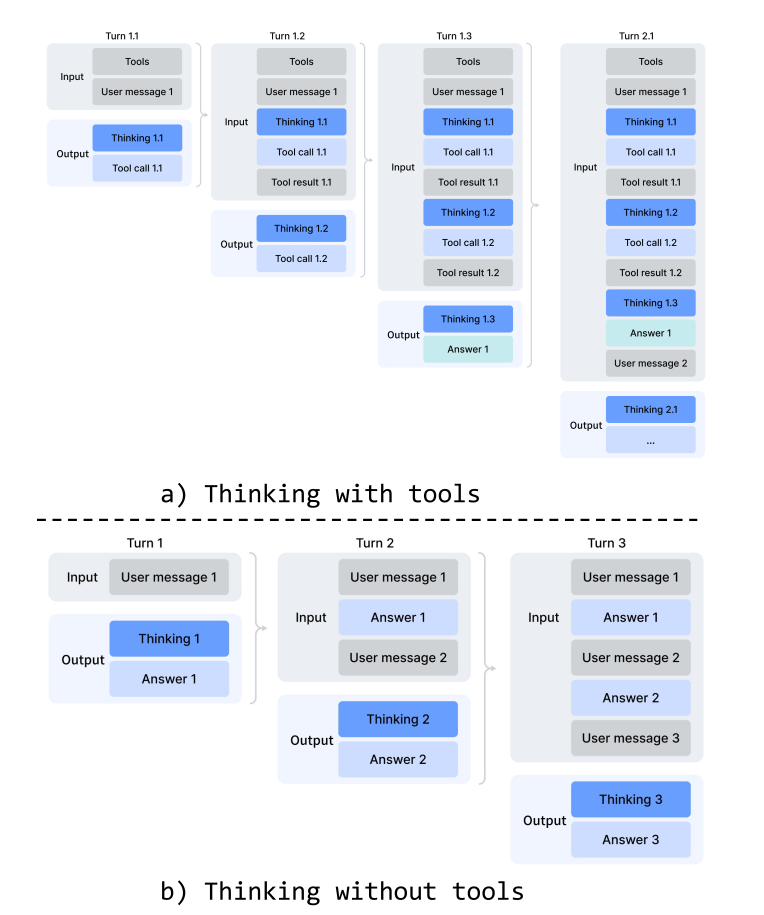
这张图背后的设计很微妙：在工具调用场景，模型如果每一轮都丢弃 thinking trace，就会反复重建任务状态，浪费 token，也容易忘记已验证/已排除的路径；而普通聊天如果永久保留 thinking，又会让上下文膨胀且带来不必要成本。因此 V4 按场景选择不同 retention policy：工具任务保留完整跨轮 reasoning，普通对话仍在新用户消息到来后压缩历史 thinking。
7. 实验评测
论文的证据分三层：base model 证明架构/数据/训练有效，post-trained model 在 public benchmark 上证明能力，真实任务评测证明产品场景收益。需要注意，许多评测是 DeepSeek 内部框架或内部数据，结论应理解为论文报告值，而非完全独立第三方复现。
7.1 综合榜单：Base、知识、推理、代码与 Agent
Base 模型评测比较 DeepSeek-V3.2-Base、DeepSeek-V4-Flash-Base 和 DeepSeek-V4-Pro-Base。论文强调，Flash-Base 在激活参数和总参数都显著小于 V3.2-Base 的情况下，在多数 benchmark 上超过 V3.2-Base；Pro-Base 则进一步在知识、推理、代码和长上下文上形成接近全面优势。这一层证据说明，CSA/HCA、mHC、Muon、数据改进并没有把能力换成效率，而是在效率提升同时保住甚至提升了 base capability。
7.1.1 标准评测结果概览
| 维度 | 代表结果 | 解读 |
|---|---|---|
| Base model | V4-Flash-Base 激活参数少于 V3.2-Base，但多数 benchmark 优于 V3.2-Base；V4-Pro-Base 进一步几乎全面领先。 | 说明效率结构没有明显牺牲基础能力。 |
| 知识与推理 | V4-Pro-Max 在 SimpleQA-Verified 达 57.9，Apex Shortlist 达 90.2，Codeforces rating 3206。 | 开放模型中强，但论文也承认知识类仍落后 Gemini-3.1-Pro。 |
| 1M context | V4-Pro-Max: MRCR 1M 83.5，CorpusQA 1M 62.0。 | MRCR 上超过 Gemini-3.1-Pro，但低于 Claude Opus 4.6；CorpusQA 更接近真实场景。 |
| Agent | V4-Pro-Max: TerminalBench 2.0 为 67.9，SWE Verified 为 80.6，Toolathlon 为 51.8。 | 代码/工具 agent 具备竞争力，但闭源 frontier 仍有优势。 |
| 真实任务 | 中文白领任务对 Opus-4.6-Max 总体 win 53%、tie 10%、lose 37%。 | 论文主张其中文专业写作和长文档输出是产品强项。 |
知识类任务上，V4-Pro-Max 在 open model 中表现突出，但论文也写得很谨慎：它在 SimpleQA-Verified 等任务上显著超过开源模型，却仍落后于 Gemini-3.1-Pro 这类顶级闭源模型。推理类任务更接近论文的主张：当 Max 模式允许更高 thinking budget 时，DeepSeek-V4-Pro-Max 在 Apex、IMOAnswerBench、Codeforces 等任务上大幅提升，并把开源模型的上界推高。
Agent 评测包含 TerminalBench 2.0、SWE Verified、SWE Pro、BrowseComp、MCPAtlas、Toolathlon 等。这里的重点不是单点第一，而是“工具泛化”：MCPAtlas 和 Toolathlon 包含多工具、多 MCP 服务，V4-Pro-Max 仍有较好表现，说明 DSML 工具格式、interleaved thinking 和长上下文策略不是只对内部 harness 有效。
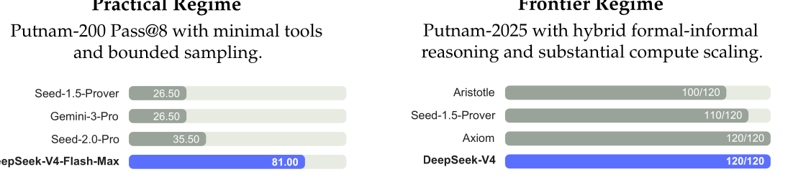
Figure 8 特别值得单独看。左侧 Practical Regime 使用更轻量的 LeanExplore 工具和有限采样，DeepSeek-V4-Flash-Max 达到 81.00，远高于几个对照；右侧 Frontier Regime 则是更重的 hybrid formal-informal pipeline，DeepSeek-V4 达到 120/120。它说明 V4 的推理能力不是只体现在自然语言 benchmark，也能转化成形式验证闭环里的搜索效率。
7.2 长上下文：1M 可用，但不是完全无损
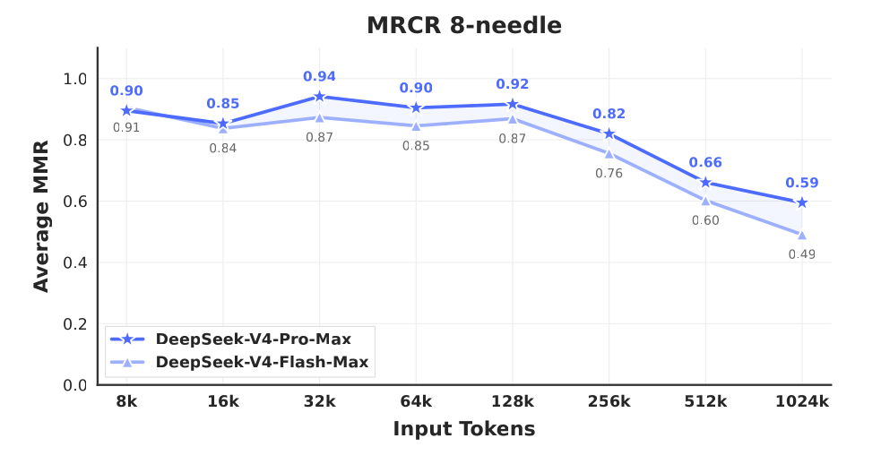
长上下文评测使用 MRCR 和 CorpusQA。MRCR 更偏合成检索，能直接观察 needle retrieval 随长度增长的退化；CorpusQA 更贴近真实长文档问答。论文称 V4-Pro-Max 在 MRCR 上超过 Gemini-3.1-Pro，但仍低于 Claude Opus 4.6；在 CorpusQA 上则优于 Gemini-3.1-Pro。结合 Figure 9 看，128K 以内曲线很稳，512K/1024K 出现明显下降，这个细节比“支持 1M”四个字更有信息量。
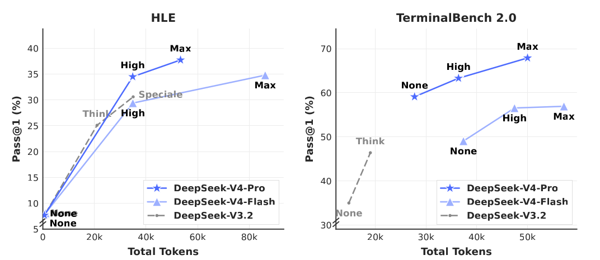
Figure 10 是 test-time scaling 的成本图。它提醒我们：Max 不是神秘能力开关，而是消耗更多 total tokens 换取更高通过率。V4 的亮点在于，在一些任务上同等 token 下比 V3.2 更有效率，或者达到相同成绩需要更少 token。这与 CSA/HCA 降低长上下文边际成本的目标是一致的。
7.3 真实任务：中文写作、搜索、办公与代码 Agent
真实任务部分最有产品味。中文写作中，V4-Pro 在功能写作上相对 Gemini-3.1-Pro 有更高胜率，论文解释为 Gemini 有时会让自身风格偏好覆盖用户明确要求；创意写作中，V4-Pro 在 writing quality 上优势更明显，但在极复杂约束、多轮场景下，Claude Opus 4.5 仍有优势。搜索任务则区分非思考模式的 RAG 和 thinking 模式的 agentic search，后者通过多轮 search/fetch 提升复杂问答质量，成本只比普通 RAG 略高。
白领任务评测包含 30 个高级中文专业任务，覆盖分析、生成、编辑和多行业文档工作流；代码 agent 评测来自约 200 个内部真实研发任务，经筛选保留 30 个，覆盖 PyTorch、CUDA、Rust、C++ 等技术栈。这里的结果不像标准 benchmark 那样容易复现，但能显示 DeepSeek 关心的产品场景：长文档、专业中文、工具调用和工程任务。
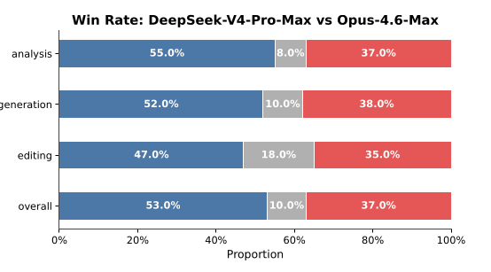
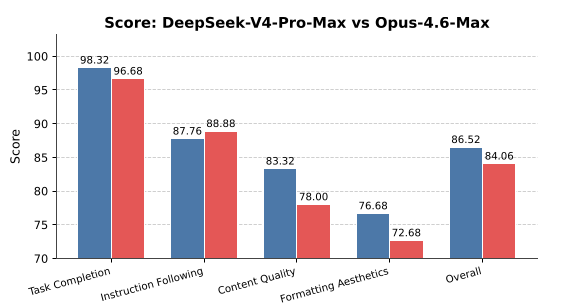
8. 核心总结
8.1 CSA/HCA 的核心判断：多分辨率上下文记忆
单一稀疏 attention 容易面临一个两难：保留太多 token 就不省，保留太少又损失长程信息。DeepSeek-V4 的处理是分层分辨率：CSA 保持较细粒度压缩并用 top-k 做内容选择，HCA 用 $m'=128$ 保存更粗的全局记忆，滑窗分支兜住局部细节。它像是在同一模型里放了三种记忆：近邻高分辨率、长程可检索、中远程粗摘要。
这也解释了为什么 V4 在长上下文中仍会退化但退化较慢。压缩意味着信息不可避免地损失；CSA 的 top-k 也意味着某些历史块会被忽略。但只要模型能把任务相关信息压进 compressed entries，并让 indexer 找到关键块，就可以在远低于 full attention 成本的情况下维持可用检索能力。Figure 9 中 128K 前曲线稳定、512K 后下降，正符合这个机制预期。
8.2 mHC 的价值：不只是“多一条连接”
从公式看，mHC 的关键是把残差传播矩阵约束为非扩张映射。对于 61 层、1.6T MoE、Muon、大上下文训练这种组合，单纯扩大残差状态可能放大不稳定；mHC 通过双随机矩阵把表达空间扩宽，同时把传播增益压住。这也是为什么论文把 mHC 和训练稳定性、fused kernel、recomputation 一起讲。
mHC 还有一个容易被忽略的作用：它给模型增加了一条与 hidden size 不完全相同的 scaling axis。传统扩大模型常见做法是加宽 hidden dim、加深层数、增加 experts；mHC 则扩大 residual stream 的“通道数”，但每个内部 layer 仍处理 $d$ 维输入。这种设计可能以较小计算开销提升跨层信息混合能力，不过它也引入了额外 kernel 和通信复杂度。
8.3 Muon、mHC、CSA/HCA 之间的稳定性耦合
报告中三大新组件不是独立模块。CSA/HCA 在 attention 前做 RMSNorm，降低 logits 爆炸风险；Muon 因此可以不使用 QK-Clip；mHC 扩展 residual stream，但又通过双随机约束避免层间传播放大；训练中的 Anticipatory Routing 和 SwiGLU Clamping 再处理 MoE outlier。换句话说，DeepSeek-V4 的稳定性来自多层防线，而不是某一个“银弹”。
8.4 真正卖点：模型-系统共同设计
如果只看 benchmark，V4 像又一个强模型报告；但它花大量篇幅解释 EP mega-kernel、TileLang、deterministic kernel、context parallelism、on-disk KV、million-token RL rollout。原因很直接：1M token 的瓶颈不是单个算法，而是从训练、推理、缓存、工具轨迹、RL 数据流到 sandbox 的全链路成本。
尤其是 KV cache 部分，体现了从模型结构到服务系统的闭环：模型层面压缩 KV，推理系统层面按 state cache/classical KV cache 管理异构状态，存储层面再把共享前缀落盘复用。如果没有这三层配合，百万 token 即便在单请求里跑通，也很难成为高并发服务。
8.5 Pro 与 Flash 的定位
Pro 是能力优先：更大 hidden dim、更多层、更多 routed experts、更高 top-k、更强知识保留。Flash 是成本优先：13B activated 参数能在不少 reasoning 任务上通过更大 thinking budget 追近 Pro，但知识类任务因容量小明显落后。换言之，Flash 更像“用时间换能力”的高效架构，Pro 更像“容量+时间”同时拉满。
这对实际使用有启发：如果任务主要是可验证推理、代码竞赛或需要搜索的 agent，Flash 在给足 thinking budget 时可能很划算；如果任务依赖世界知识、复杂上下文综合、内部知识记忆或高难度 agent，Pro 的容量优势更难被纯 token budget 弥补。
9. 局限与展望
9.1 如何读这些结果：强结论与保留项
论文结论中承认，为了长上下文效率，V4 采用了大胆但复杂的架构，许多组件和 tricks 是在风险可控前提下保留的。未来方向包括把架构蒸馏到更核心、更优雅的设计，同时继续研究训练 spike 的根因，而不是只依赖 Anticipatory Routing 和 SwiGLU Clamping 这样的经验手段。
从报告读者角度，还应注意三点：
- 评测可复现性：不少结果来自内部 benchmark、内部 harness 或内部评分 rubrics，适合作为论文证据，但仍需要外部复现。
- 长上下文并非无损：MRCR 图中 128K 后已经出现明显下降，1M 是“仍强”而不是“完全平坦”。
- 架构复杂度：CSA、HCA、SWA、mHC、Muon、FP4/FP8、异构 KV cache 共同作用，部署门槛高，生态复用难度也更大。
9.2 未来方向：更简洁、更低延迟、更多模态
论文提出的后续方向可以分成四类。第一，架构简化：把当前复杂但有效的设计蒸馏成更少、更本质的组件。第二，稳定性理论：解释 Anticipatory Routing 和 SwiGLU Clamping 为什么有效，并建立更可预测的 loss spike 监控。第三，稀疏性继续扩展：不仅 MoE 和 attention 稀疏，也探索 embedding 等新维度的 sparsity。第四，产品能力扩展：继续优化低延迟长上下文交互、长程多轮 agent，并加入 multimodal capabilities。
9.3 最后 takeaway
核心总结：DeepSeek-V4 的贡献在于把百万 token 上下文从“窗口长度指标”推进到“模型、训练、推理、agent 后训练和系统服务”的联合问题。它未必证明了最终形态，但很好地展示了下一代长上下文模型需要同时优化算力、缓存、稳定性和交互轨迹。
附录：图像映射检查
本报告使用 PDF 页面裁图；PDF 内嵌的 LaTeX 图文件名包括 dsv4_performance、basic_arch、CSA、HCA、mega_moe_pipeline、kv_cache、chat_v2、putnam panels、mrcr、dsv4_effort、winrate、scores。下表按论文图号核对。
| 报告图片 | 论文图号 / 页码 | 原始 caption 摘要 |
|---|---|---|
| fig01_overview.png | Figure 1 / p1 | Benchmark performance; inference FLOPs and KV cache size. |
| fig02_architecture.png | Figure 2 / p6 | Overall architecture with CSA/HCA, DeepSeekMoE, mHC. |
| fig03_csa.png | Figure 3 / p9 | Core architecture of CSA. |
| fig04_hca.png | Figure 4 / p11 | Core architecture of HCA. |
| fig05_ep_pipeline.png | Figure 5 / p15 | EP scheme compared with related work. |
| fig06_kv_cache.png | Figure 6 / p22 | KV cache layout for DeepSeek-V4. |
| fig07_thinking_management.png | Figure 7 / p31 | Thinking management with and without tools. |
| fig08_formal_reasoning.png | Figure 8 / p40 | Formal reasoning under practical and frontier regimes. |
| fig09_mrcr.png | Figure 9 / p40 | MRCR task performance. |
| fig10_effort.png | Figure 10 / p41 | HLE and TerminalBench by reasoning effort. |
| fig11_winrate.png | Figure 11 / p43 | Win-rate comparison on white-collar tasks. |
| fig12_scores.png | Figure 12 / p43 | Detailed dimension scores. |
参考链接
- 论文 PDF：DeepSeek_V4.pdf on Hugging Face
- 模型集合：DeepSeek-V4 collection
- 推理实现：DeepSeek-V4-Pro inference directory
- 本地 PDF：DeepSeek_V4.pdf